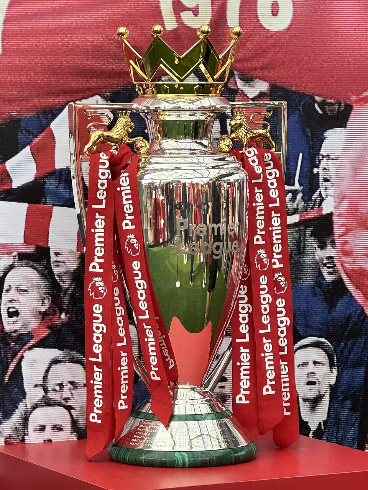

A Premier League não é apenas a primeira divisão da Inglaterra. Desde sua criação, o campeonato se tornou uma das propriedades esportivas mais valiosas e acompanhadas do planeta, atraindo grandes jogadores, treinadores de diferentes escolas e investimentos capazes de transformar os clubes.
A força comercial, porém, explica apenas parte dessa história. A liga inglesa cresceu porque conseguiu combinar dinheiro, exposição internacional e organização com elementos que já faziam parte do futebol do país: estádios cheios, rivalidades centenárias, clubes ligados às próprias comunidades e um calendário no qual praticamente toda rodada oferece confrontos de grande interesse.
Ao longo da era Premier League, Manchester United, Manchester City, Chelsea, Arsenal e Liverpool concentraram a maior parte dos títulos. Ainda assim, as conquistas de Blackburn Rovers e Leicester City provaram que o campeonato também pode produzir campanhas capazes de desafiar as principais potências.
Como surgiu a competição
A Premier League nasceu de uma reorganização profunda do futebol inglês no começo da década de 1990. Os principais clubes da antiga First Division buscavam maior autonomia para negociar contratos comerciais, direitos de transmissão e patrocínios.
Em 17 de julho de 1991, foi assinado o acordo que estabeleceu os princípios da nova competição. Em 20 de fevereiro de 1992, os 22 integrantes da primeira divisão deixaram coletivamente a Football League. A Premier League foi formalmente constituída como empresa em 27 de maio daquele ano, com independência comercial para organizar seus próprios acordos.
A primeira rodada foi disputada em 15 de agosto de 1992. A edição inaugural reuniu 22 clubes.
A mudança não apagou a história anterior do Campeonato Inglês. Passou a representar a divisão máxima do país, mas os títulos conquistados antes de 1992 continuam fazendo parte da história da elite inglesa. Essa distinção é importante porque a lista dos maiores campeões da era Premier League não é igual ao ranking geral de títulos nacionais da Inglaterra.
A diminuição de clubes
A liga começou com 22 participantes, mas o plano de redução para 20 equipes já fazia parte da reorganização. A mudança foi concluída ao fim da temporada 1994/95, quando quatro clubes foram rebaixados e apenas dois subiram.
Desde 1995/96, o campeonato é disputado por 20 times. Cada equipe enfrenta os outros 19 adversários duas vezes, uma em casa e outra fora, totalizando 38 partidas por clube e 380 jogos em toda a temporada.
Os três últimos colocados são rebaixados para a Championship, segunda divisão do país. Eles são substituídos pelos dois primeiros colocados da Championship e pelo vencedor dos playoffs de acesso.
Os maiores campeões da era Premier League
Somente sete clubes conquistaram o troféu desde a temporada inaugural de 1992/93. Depois do título do Arsenal em 2025/26, a divisão das conquistas ficou assim:
- Manchester United — 13 títulos
- Manchester City — 8 títulos
- Chelsea — 5 títulos
- Arsenal — 4 títulos
- Liverpool — 2 títulos
- Blackburn Rovers — 1 título
- Leicester City — 1 título
- Atual campeão: Arsenal, vencedor da temporada 2025/26
O Manchester United continua isolado como o maior campeão da história, mesmo não vencendo desde a temporada 2012/13. O Arsenal, por sua vez, chegou ao quarto troféu ao encerrar uma espera de 22 anos, depois de três temporadas consecutivas terminando na segunda colocação. A conquista de 2025/26 colocou o clube londrino mais perto do Chelsea e abriu um novo capítulo na disputa entre as principais forças inglesas.
A era de Alex Ferguson
O primeiro grande domínio da Premier League pertenceu ao Manchester United. Sob o comando de Ferguson, o clube conquistou 13 títulos.
As temporadas das conquistas:
- 1992/93
- 1993/94
- 1995/96
- 1996/97
- 1998/99
- 1999/2000
- 2000/01
- 2002/03
- 2006/07
- 2007/08
- 2008/09
- 2010/11
- 2012/13
Todos os 13 títulos foram conquistados com o técnico francês. Além de ganhar a edição inaugural, o treinador construiu uma sequência de domínio, renovação de elenco e competitividade que nenhuma outra equipe conseguiu repetir por tanto tempo na era Premier League.
Boa parte dessa identidade foi construída em Old Trafford. A história do clube e da competição se conecta ao peso do estádio, conhecido como Teatro dos Sonhos.
Os Invencíveis e a retomada com Arteta
O Arsenal foi o principal adversário do Manchester United na passagem dos anos 1990 para os anos 2000. Com Arsène Wenger, os Gunners conquistaram a competição em 1997/98, 2001/02 e 2003/04.
A última dessas campanhas entrou para a história. O time terminou as 38 rodadas sem perder, com 26 vitórias e 12 empates. A equipe liderada por nomes como Thierry Henry, Patrick Vieira, Dennis Bergkamp, Ashley Cole e Sol Campbell recebeu o apelido de “Invencíveis”.
A espera pelo título seguinte durou 22 anos. Em 2025/26, depois de três vice-campeonatos consecutivos, o time de Mikel Arteta superou o Manchester City e voltou ao topo. O Arsenal terminou aquela campanha com a melhor defesa da liga, 19 partidas sem sofrer gols e apenas 27 gols concedidos.
O equilíbrio de forças
O Chelsea alterou a estrutura de poder a partir da temporada 2004/05. Com José Mourinho, o clube conquistou dois títulos consecutivos e se estabeleceu entre as maiores potências do futebol inglês.
Os Blues voltaram a ser campeões em 2009/10, 2014/15 e 2016/17, alcançando cinco troféus na era Premier League. O período mostrou como investimento, planejamento esportivo e treinadores de alto nível poderiam acelerar a transformação de um clube em candidato permanente aos principais títulos.
Stamford Bridge se tornou um dos centros desse novo cenário. O estádio acompanhou diferentes gerações vitoriosas e consolidou sua importância entre os grandes palcos do futebol londrino.
O domínio da era Guardiola
O Manchester City conquistou seu primeiro título em 2011/12, com o gol histórico de Sergio Agüero nos acréscimos da última rodada. O clube voltou ao topo em 2013/14 e, posteriormente, iniciou o período mais dominante de sua história sob o comando de Pep Guardiola.
Títulos do City na era Premier League:
- 2011/12 — Roberto Mancini
- 2013/14 — Manuel Pellegrini
- 2017/18 — Pep Guardiola
- 2018/19 — Pep Guardiola
- 2020/21 — Pep Guardiola
- 2021/22 — Pep Guardiola
- 2022/23 — Pep Guardiola
- 2023/24 — Pep Guardiola
Guardiola comandou o City em seis das oito conquistas do clube. Nesse período, a equipe também se tornou a primeira da história a vencer quatro temporadas consecutivas, entre 2020/21 e 2023/24.
A campanha de 2017/18 terminou com uma diferença de 19 pontos sobre o Manchester United, a maior vantagem já registrada por um campeão da Premier League.
O retorno do protagonismo
O Liverpool chegou à era Premier League carregando uma das histórias mais vitoriosas do futebol inglês, mas precisou esperar até 2019/20 para conquistar seu primeiro título no novo formato.
Com Jürgen Klopp, o clube construiu uma equipe baseada em intensidade, pressão alta, velocidade ofensiva e grande força coletiva. O título de 2019/20 encerrou um jejum de 30 anos na primeira divisão inglesa.
A segunda conquista veio em 2024/25, recolocando o Liverpool no topo. Embora tenha menos taças na era Premier League do que United, City, Chelsea e Arsenal, o clube permanece entre os dois maiores campeões quando toda a história da elite inglesa é considerada.
A ligação entre equipe, torcida e estádio também ajuda a explicar essa força. Anfield não é apenas o local dos jogos do Liverpool, mas um elemento central da identidade competitiva do clube.
As "zebras" que desafiaram as potências
O Blackburn Rovers foi campeão em 1994/95, interrompendo o domínio inicial do Manchester United. Liderada pelos gols de Alan Shearer, a equipe terminou um ponto à frente do United e conquistou um dos títulos mais marcantes dos primeiros anos da competição.
Mais de duas décadas depois, o Leicester City protagonizou uma surpresa ainda maior. O clube iniciou a temporada 2015/16 longe da lista de favoritos, mas manteve uma regularidade impressionante sob o comando de Claudio Ranieri.
Com Jamie Vardy, Riyad Mahrez, N’Golo Kanté, Kasper Schmeichel e uma equipe extremamente organizada, o Leicester superou os clubes mais ricos da Inglaterra e conquistou a Premier League. O título se transformou em uma das maiores zebras da história do futebol europeu.
O peso do Big Six
A expressão “Big Six” é usada para identificar Arsenal, Chelsea, Liverpool, Manchester City, Manchester United e Tottenham. O grupo reúne clubes com grande torcida, presença internacional, receitas elevadas e participação frequente nas competições europeias.
Cinco integrantes desse bloco já foram campeões da Premier League. A exceção é o Tottenham, que possui títulos importantes na história geral do futebol inglês, mas ainda não venceu a liga desde a criação do formato atual em 1992.
O protagonismo do Big Six não significa que os demais clubes sejam meros participantes. Equipes como Newcastle, Aston Villa, Everton, Nottingham Forest, e outras forças regionais carregam tradições próprias, torcidas numerosas e capacidade para desafiar os favoritos.
As rivalidades
A Premier League ganhou alcance global, mas grande parte de sua força continua ligada a disputas locais e históricas.
Arsenal e Tottenham protagonizam o dérbi do norte de Londres. Manchester United e Manchester City dividem uma das cidades mais importantes do futebol mundial. Liverpool e Everton disputam o dérbi de Merseyside. Chelsea, Arsenal, Tottenham, Fulham, Brentford, Crystal Palace e West Ham representam diferentes regiões e identidades da capital inglesa.
Liverpool e Manchester United formam uma rivalidade que ultrapassa o campo. O confronto reúne os dois maiores campeões da história completa da elite inglesa e também reflete a antiga competição econômica e cultural entre as cidades.
Esses jogos não valem somente três pontos. Eles influenciam temporadas, pressionam treinadores, fortalecem identidades e mantêm a Premier League conectada às raízes do futebol inglês.
Calendário, copas e desgaste físico
A extensão territorial da Inglaterra permite deslocamentos menores do que os encontrados em países continentais de grandes dimensões. Isso, entretanto, não torna a temporada simples.
Os clubes precisam conciliar as 38 rodadas da Premier League com a Copa da Liga Inglesa, a FA Cup e as competições organizadas pela Uefa. Datas internacionais e compromissos das seleções aumentam ainda mais o desgaste.
A força financeira e o alcance global
A transformação da Premier League em referência mundial também passa pelo tamanho de sua operação financeira. Direitos de transmissão, patrocínios, receitas comerciais, bilheteria, hospitalidade e exploração dos estádios formam uma estrutura que coloca os clubes ingleses em uma posição privilegiada no mercado internacional.
Na temporada 2025/26, os 20 participantes da Premier League superaram £7 bilhões em receitas operacionais combinadas, sem considerar valores obtidos diretamente com transferências de jogadores. O número representa uma projeção, porque os balanços completos dos clubes são divulgados posteriormente, mas confirma um novo avanço em relação aos £6,8 bilhões registrados em 2024/25.
Na temporada anterior, as principais fontes de receita dos clubes foram:
- Direitos de transmissão — £3,4 bilhões
- Receitas comerciais — £2,4 bilhões
- Bilheteria, hospitalidade e receitas de dias de jogo — mais de £1 bilhão
A força televisiva continua sendo um dos pilares do modelo. A Premier League vende seus direitos de forma centralizada e depois distribui parte da arrecadação entre os participantes. Esse sistema garante que todos os clubes recebam uma parcela relevante, embora o valor final varie de acordo com a posição na tabela e com a quantidade de partidas exibidas ao vivo no Reino Unido.
O prêmio do campeão
Diferentemente de outras competições, a Premier League não entrega ao campeão um prêmio único e separado pela conquista do título. O dinheiro faz parte dos chamados pagamentos centrais, que reúnem diferentes fontes de receita:
- Parcela igualitária dos direitos de transmissão
- Distribuição das receitas comerciais da liga
- Pagamento por posição na classificação
- Taxas relacionadas aos jogos exibidos ao vivo no Reino Unido
- Parcela dos direitos internacionais
O campeão recebe a maior cota por desempenho. O primeiro colocado ganha 20 vezes o valor-base do pagamento por mérito, enquanto o vice recebe 19 vezes, seguindo uma escala até o último colocado, que fica com apenas uma cota. Na temporada anterior, cada posição representou aproximadamente £2,6 milhões, e o campeão recebeu £53,1 milhões somente pelo mérito esportivo.
Com o título de 2025/26, o Arsenal ficou com a maior parcela de mérito da temporada. Além desse pagamento, o clube recebeu as cotas igualitárias, as receitas dos direitos internacionais, os valores comerciais e as taxas relacionadas aos jogos transmitidos.
Esse montante não corresponde à receita total do Arsenal na temporada. Entradas de bilheteria, patrocínios próprios, venda de produtos, contratos comerciais e premiações das competições europeias são contabilizadas separadamente. Também existem possíveis bônus previstos nos contratos com patrocinadores, jogadores e integrantes da comissão técnica.
Fair play financeiro e controle dos gastos
A enorme capacidade de arrecadação não significa que os clubes possam gastar sem limites. Durante a temporada 2025/26, a Premier League continuou utilizando as Regras de Rentabilidade e Sustentabilidade, conhecidas pela sigla PSR.
Pelo regulamento, um clube que permaneceu na Premier League durante todo o período de avaliação poderia acumular até £105 milhões em perdas ajustadas ao longo de três temporadas. O limite era reduzido em £22 milhões para cada temporada que a equipe tivesse disputado na Championship dentro desse intervalo.
Nem todo investimento entrava integralmente nessa conta. Despesas consideradas importantes para o desenvolvimento do futebol, como investimentos em categorias de base, futebol feminino, projetos comunitários e infraestrutura, poderiam ser retiradas do cálculo ajustado. O objetivo era controlar gastos excessivos sem impedir que os clubes modernizassem estádios, academias e estruturas esportivas.
As equipes que ultrapassassem os limites poderiam ser investigadas e julgadas por comissões independentes. Entre as punições possíveis estavam multas, restrições e perda de pontos, como ocorreu em casos anteriores envolvendo clubes da competição.
A temporada 2025/26 também marcou a transição para um novo modelo. A partir de 2026/27, a Premier League passou a adotar o Squad Cost Ratio, sistema que limita os gastos relacionados ao elenco a 85% das receitas do futebol e do resultado líquido obtido com negociações de jogadores. Clubes classificados para competições europeias também precisam respeitar o limite mais rígido de 70% estabelecido pela Uefa.
Uma liga para quase todo o planeta
A dimensão financeira está diretamente ligada ao seu alcance internacional. O campeonato é transmitido em 189 dos 193 países reconhecidos pelas Nações Unidas, com partidas disponíveis em aproximadamente 900 milhões de residências ao redor do mundo. A liga também possui cerca de 1,87 bilhão de seguidores globais que interagem semanalmente com seus conteúdos por diferentes meios.
Essa presença global amplia o valor dos direitos de transmissão e fortalece os contratos comerciais dos clubes. Um patrocinador de camisa, fornecedor de material esportivo ou parceiro oficial não está comprando exposição apenas na Inglaterra, mas acesso a uma audiência distribuída por Europa, Ásia, África, América e Oceania.
É esse ciclo que sustenta o poder econômico da competição: o alcance mundial valoriza os direitos e os patrocínios, o aumento das receitas permite investimentos em jogadores e estruturas, e a presença de grandes nomes mantém o interesse internacional. Por isso, a liga não é apenas o campeonato nacional mais rico do futebol europeu, mas uma das maiores plataformas esportivas e comerciais do planeta.
A referência mundial
A Premier League alcançou projeção internacional porque soube transformar o campeonato em um produto global sem eliminar completamente suas características locais.
A competição reúne grandes jogadores, treinadores de diferentes nacionalidades, estádios reconhecidos mundialmente e contratos comerciais de enorme alcance. Ao mesmo tempo, continua sustentada por clubes com identidades regionais fortes, rivalidades históricas e torcedores que tratam cada partida como parte da vida de suas origens.
O equilíbrio absoluto não existe: os clubes mais ricos concentram títulos, receitas e os elencos mais valiosos. Ainda assim, o sistema de acesso e rebaixamento, a força das equipes intermediárias e a intensidade do calendário impedem que o campeonato seja reduzido a poucos confrontos decisivos.
É essa combinação que explica a permanência da Premier League entre as principais competições do futebol. A liga mudou financeiramente, ampliou suas fronteiras e se tornou uma marca mundial, mas continua encontrando sua maior força naquilo que já definia o futebol inglês antes de 1992: tradição, rivalidade, pertencimento e a certeza de que cada rodada pode produzir uma nova história.